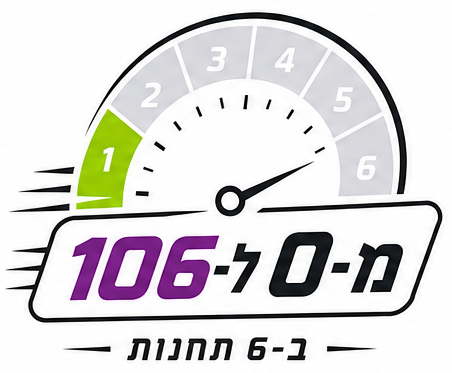
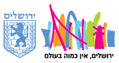
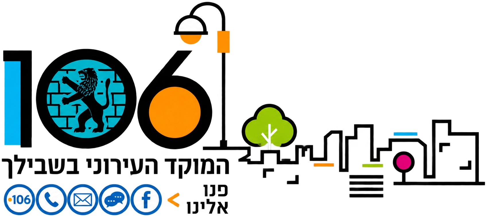
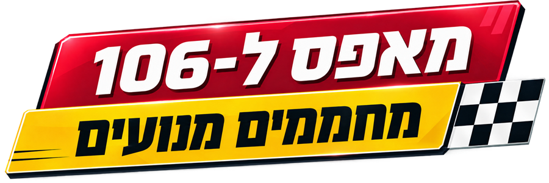
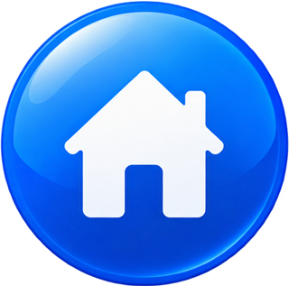
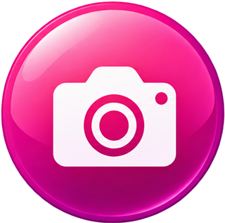
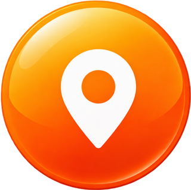
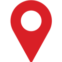
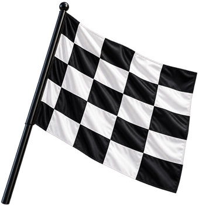

איזה כיף שהצטרפתם אלינו.
עוד רגע נפגשים על קו הזינוק
ויש הרבה לגלות…
הכנו לכם היכרות קצרה עם המוקד העירוני שעובד
ללא הפסקה – 24/7: מי אנחנו, מה קורה כאן, מי יהיה לצידכם ואיך תיראה הדרך שלכם לתפקיד.
בואו נכיר מקרוב.
הזינוק לפניך
לפני שעולים לקו הזינוק, מתחילים להכיר
מוקד עירוני הוא מרכז השירות של ירושלים. כאן פוגשים את העיר כמו שהיא באמת:
אנשים, שאלות, מצבים וסיפורים שמשתנים מרגע לרגע.
במהלך הדרך שלכם במוקד תפגשו

תושבים ותושבות
מבקרים
תייריםכל מי שזקוק למידע, הכוונה או סיוע.
זהו הצעד הראשון שלכם, לפני נקודת הזינוק: להכיר את המוקד, את הקצב ואת האנשים,
ויחד לצאת למרוץ ולתת את השירות המקצועי והטוב ביותר.
אנחנו כאן כדי ללוות, ללמד ולעזור לכם להרגיש חלק – כבר מהשיחה הראשונה.
ירושלים מכל הזוויות
ירושלים מגיעה למוקד דרך אנשים, שאלות ומגוון סיפורים.
קצב משתנה
יש רגעים שקטים ויש רגעים אינטנסיביים, וכל יום נראה קצת אחרת.
השפעה אמיתית
גם מענה קצר ומדויק יכול לשנות את החוויה של האזרח בעיר.

אל דאגה!
כמו כל צוות מרוץ, כך גם אתם – מקבלים הכנה.
לא מצופה מכם לדעת הכול ביום הראשון. תהליך ההכשרה בנוי בצורה הדרגתית. אנחנו נתרגל יחד ונעניק לכם את כל הכלים והביטחון לפני שתוזנקו לדרך עצמאית על הקו.
מורידים הילוך
בכל שיחה עלינו להוריד הילוך, כי המטרה היא "לזקק" את הצורך של התושב: להקשיב, לשאול את השאלות הנכונות ולהוביל את הפנייה עד למענה המדויק ביותר.
מוקד 106
המקום שבו העיר והאזרחים – נפגשים
פניית תושב
מוקד 106
הבנה, סיווג ותיעוד
הגורם המטפל בעירייה
המוקד הוא הכתובת המרכזית והראשונה לכל אזרח ואזרחית, לקבלת מידע ולדיווח על נושאים שונים הקשורים לעיר ולמרחב הציבורי. על מנת לתת מענה מקצועי, אנחנו פועלים בשני ערוצים מרכזיים ומקיפים:
פניות ודיווחים
- מפגעי ניקיון ותברואה
- תקלות תאורה
- בטיחות בדרכים
- תקלות במרחב הציבורי
ערוץ מידע
- מידע על כתובות, דרכי התקשרות ושעות פעילות של מחלקות בעירייה
- אירועים ותרבות
- חסימות כבישים

תדר 106 – הדרך שלנו לשדר שירות

כיכר ספרא – כאן נמצא המוקדעבור האזרחים, אנחנו הפנים והלב של השירות העירוני. במוקד העירוני מעניקים שירות מותאם ורגיש לקהל המגוון של ירושלים, בשפות שונות ובהתאמה לאנשים עם מוגבלויות.
חוויית השירות של כל אחת ואחד מהאזרחים מתחילה ומסתיימת בדרך שבה נוביל את השיחה. לכן אנחנו פועלים לפי שלושה עקרונות:
- 1
להקשיב
לתת לתושב מקום לבטא את צרכיו.
- 2
להבין
לזהות את הצורך המדויק באמצעות שאלות מקצועיות.
- 3
לסייע
לפתוח פנייה, לתת מידע או לכוון ליעד הנכון.
הערך שמוביל אותנושירות מכבד ומותאם לכל אדם
אנחנו 'מגדילים ראש'
גם אם פנו אלינו בנושא שאינו באחריות העירייה – נספק את המידע או נכוון את התושב.
שירות טוב מתחיל ברצון לעזור!
מוקד 106 הוא החוליה המקשרת
עיריית ירושלים היא ארגון רחב ומגוון, המעניק שירות למאות אלפי אזרחים.
אנחנו ה"עיניים" של העיר
המוקד משויך למינהל התפעול. אנו עובדים מול מאות המחלקות והיחידות העירוניות כדי לשמור על שגרת חיים תקינה ובטוחה.
השותפים שלנו למסלול
רוב עבודת המוקד מתבצעת מול אגפי מינהל התפעול, ובראשם אגפי התברואה, שפ"ע ואכיפה.
המוקד מנתב את המידע להמשך טיפול – למחלקות השטח ולגורמי חוץ נוספים כמו: משטרה, חברת חשמל ועוד.
צוות המרוץ
מערך הא.נשים שלצידכם
במוקד 106 אתם אף פעם לא לבד – לצידכם פועל צוות שלם.
וצוות המוקדנים והמוקדניות – החברים לעבודה.

איך נראית המשמרת?- 1
הגעה והתארגנות
רישום ל"דף הפסקות": שווה להגיע מוקדם! הראשונים לחתום – יוצאים ראשונים להפסקה.
- 2
התחברות למערכות
בהתאם לסידור העבודה – מחוברים למערכות ומוכנים לשיחה ראשונה.
- 3
עמדת העבודה
סביבה טכנולוגית מתקדמת עם שני מסכים, מערכות מידע ואוזניות אישיות חדשות לכל נציג.
- 4
תדריך
מעבר על דגשים יומיים או זרקור על מידע חשוב.
סביבת עבודה נעימה
אנחנו מאמינים שסביבת עבודה נעימה ואווירה טובה הן המפתח לשירות טוב:
- שוברי קפה ומאפה כהערכה על עבודה טובה והצלחה במבחני ידע
- בימי שלישי – ישיבות צוות שבועיות
- פעילויות גיבוש מגוונות
- התחשבות בסטודנטים – אנחנו יודעים שהלימודים חשובים לכם. לכן אנו מאפשרים יום חופש לפני מבחן וביום המבחן, כדי שתוכלו להצליח בראש שקט!
אוטוטו בקו הזינוק…
רגע לפני היום הראשון, הכרתם את המוקד העירוני, את התפקיד שלו בחיבור בין התושבים לעירייה, את האנשים שילוו אתכם ואת מה שמחכה לכם בהמשך.
זה היה שלב החימום הראשון שלכם במסלול "מאפס ל־106", ואותו כבר אפשר לסמן כהושלם. מכאן, מסלול ההכשרה ימשיך בהדרגה, תחנה אחר תחנה, עד שתהיו מוכנים לעלות על קו הזינוק – קו הטלפון – בביטחון.
המסלול שלכם מאפס ל־106
- היכרותהושלם
- 2מערכות העבודה
- 3מפת העירייה, אגפים וממשקים
- 4תהליך העבודה מפנייה לסגירה
- 5תרגול שירות
- 6שגרה, עומס וחירום
איך תדעו שאתם מתקדמים במסלול?
לאורך ההכשרה וגם בהמשך העבודה, תקבלו משוב שיעזור לכם להבין איפה אתם כבר חזקים ומה כדאי להמשיך לתרגל.
מערכת "הסמיילי המחייך" – הערכת נציגים תהיה לוח המחוונים האישי שלכם. וכשהסמיילי יחייך, הצופר יפעל וכולם יפרגנו.
אנחנו מאמינים במשוב בונה ובגובה העיניים – בכל חודש תוכלו לראות את ההישגים שלכם, לראות בדיוק איפה אתם אלופים ואיפה אפשר להשתפר. מעבר לזה, סגל המוקד תמיד כאן לשיחות אישיות וטיפים.
4 טיפים להתחלה טובה
- רשמו שאלות שעולות במהלך ההכשרה
- השתמשו במחברת או בקובץ אישי לסיכומים
- אל תחששו לבקש הסבר נוסף
- תנו לעצמכם זמן – הביטחון נבנה מתרגול